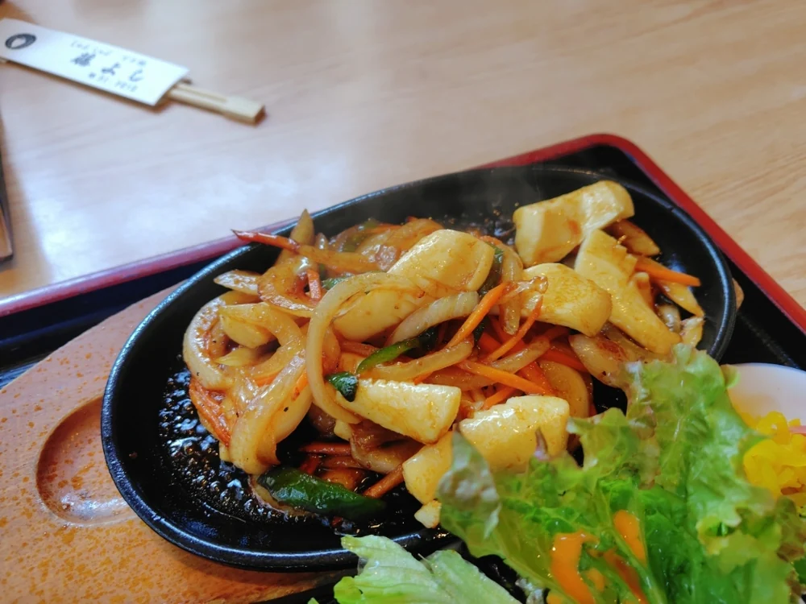
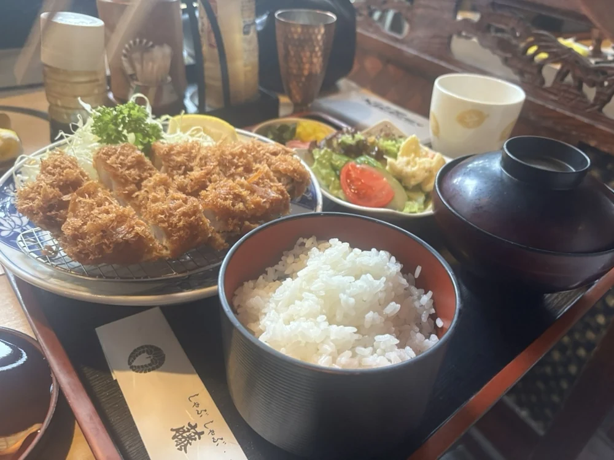
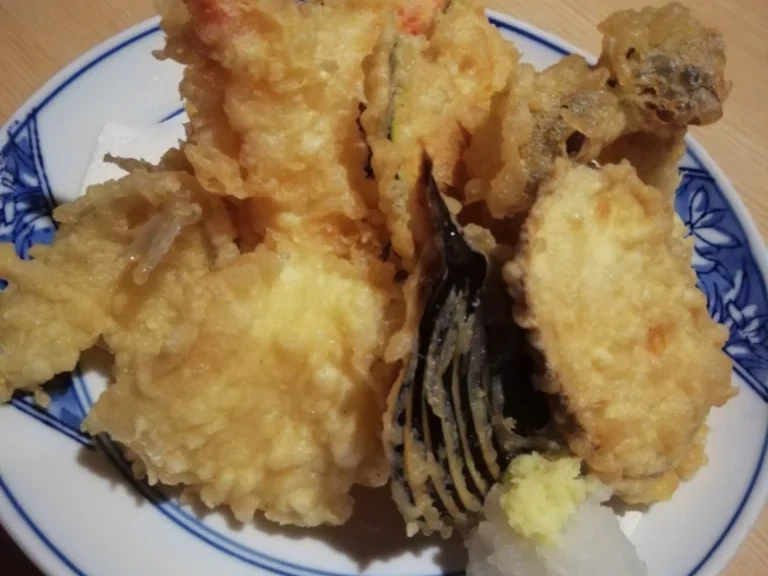
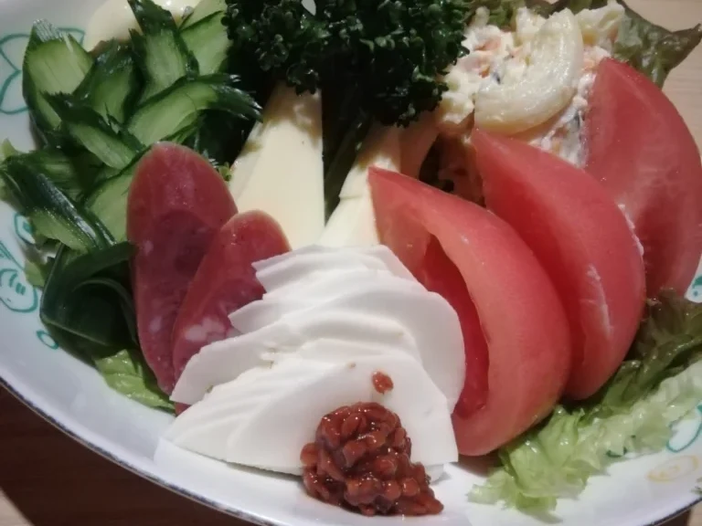
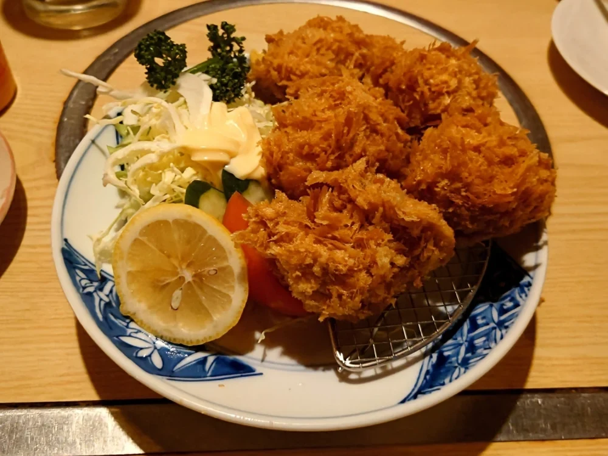
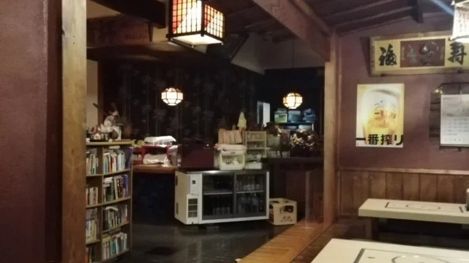
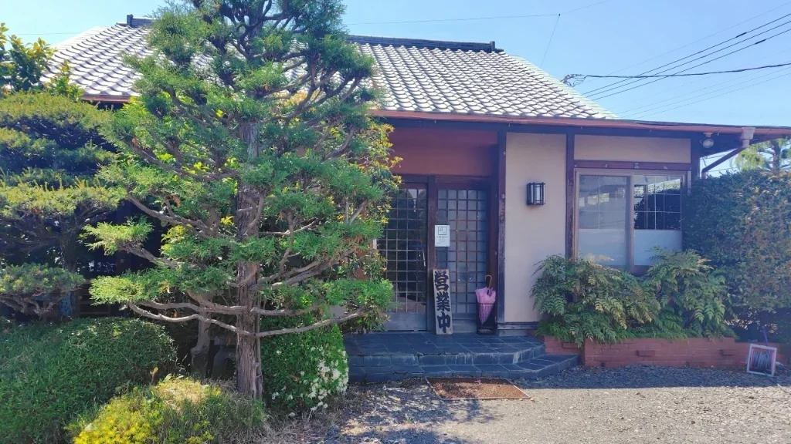
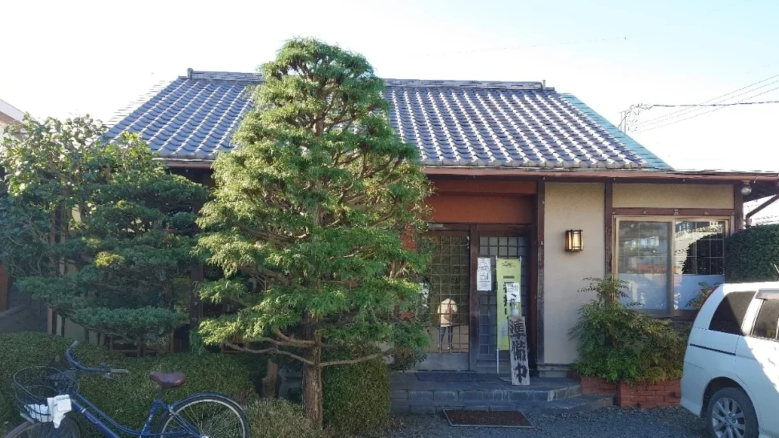
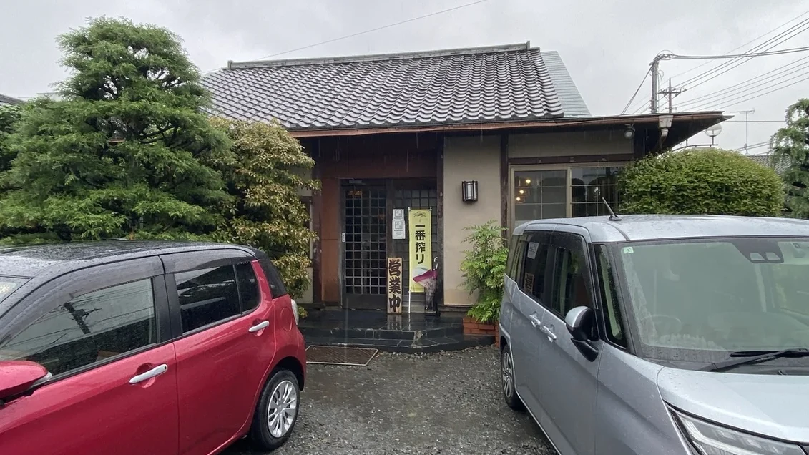

お昼と夜、二度に分けて店を開けております。ご来店の前にご確認ください。
JR古河駅 東口から徒歩15〜17分です。お子様には、お子様ワンパク定食 680円もご用意しております。
はじめての方に、まずご覧いただきたい六品です。






玄関で靴を脱いで、板の間へお上がりください。座卓のほかに、テーブルの席もございます。お一人のお昼も、お仕事帰りの一杯も、ふだんの服のままでお入りください。どうぞゆっくりなさってください。
「とんかつ定食は、パン粉サクサクでお肉も厚くて美味しい。カキフライ定食は サクサクパン粉にジューシーなカキフライ。イカ焼き定食は 鉄板でジュージュー厚切りイカ焼き。おにぎり定食は女性むきに彩り綺麗な定食でした。」
「生野菜がボリューム、新鮮さ、味ともに優秀で必ず注文しています。メニュー上の料理も、黒板の料理も外れだったことがありません。」
旭町の通り沿い、松と生垣のある構えが当店です。お車でお越しいただけます。夜は玄関の行灯を灯しております。



| 住所 | 〒306-0012 茨城県古河市旭町1-9-8 |
|---|---|
| 電話 | 0280-31-2212 |
| 営業時間 | 11:30〜14:00／17:00〜21:00 |
| 定休日 | 火曜日 |
| 駐車場 | 玄関前の砂利のスペースにお停めいただけます |
| 最寄駅 | JR古河駅 東口から徒歩15〜17分 |
ご予約やお品書きのことは、お電話にて承ります。格子戸の内で、お待ちしております。